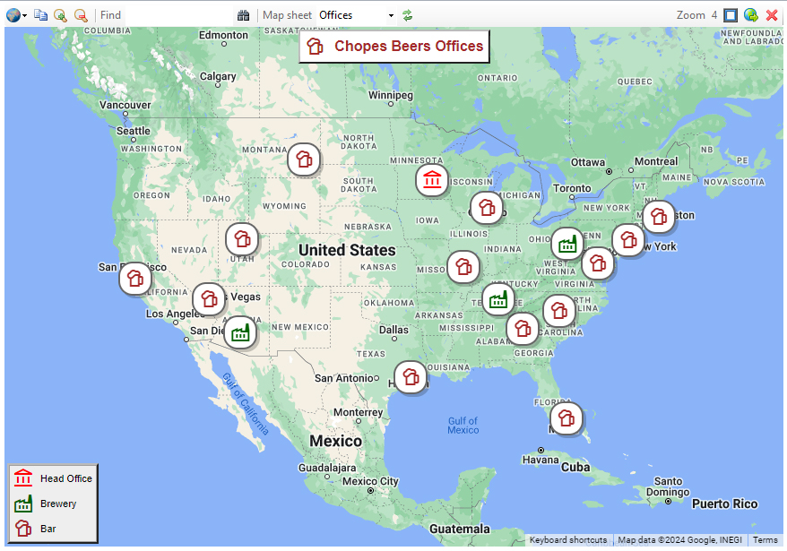
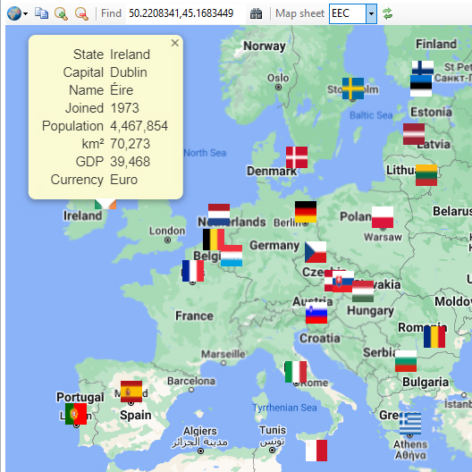
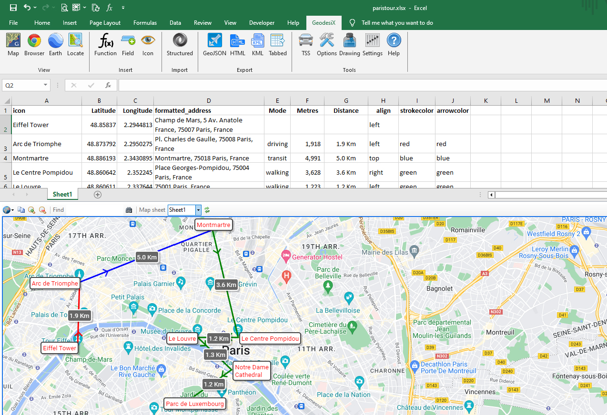
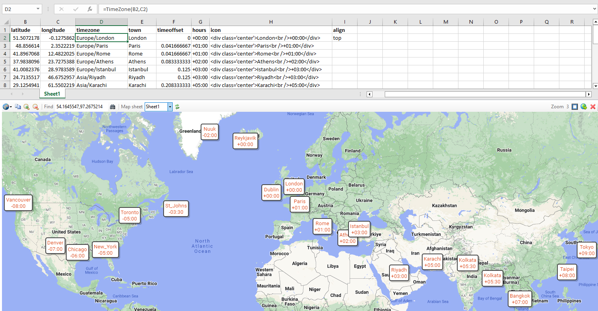
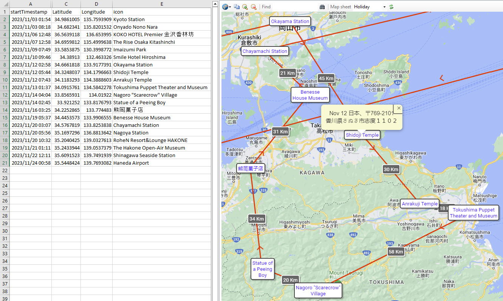
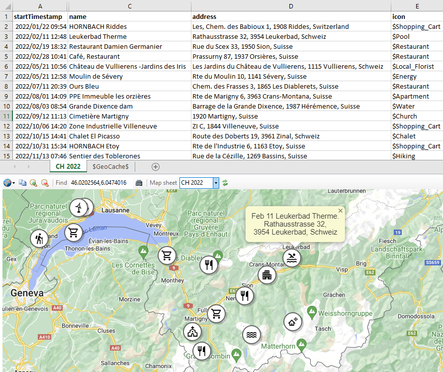

Functions Quick Reference
Area Azimuth Color Displace DMS Formulae Geocode Geodesix Heat JavaScript PlusCode Regex TimeOffset TimeZone Travel
User Interface
| Getting started | Explore Geodesix's capabilities |
| Ribbon | Functions of the buttons on the Geodesix ribbon |
| Map | Interacting with the Map Pane |
How-Tos
| Worksheet types: Activity and Visit | How lines connecting places are drawn automatically |
| Importing structured files | Extracting and transforming JSON and XML files into activities and visits |
| Annotations | Icons, Markers, Legends and Lines |
| Formatting places | Set the formats of icons, lines and annotations |
| Advanced mapping techniques | Tips for transforming, filtering, sorting and presenting data to make nice maps |
| FAQ, terminology and hints | Tips and insider information |
Example workbooks
| chopes.xlsxm | Drawing legends and page titles, using a VBA macro to simplify creating HTML tables  |
| europe.xlsxm | A map of Europe with flags and detailed popups  |
| paristour.xlsx | Planning a tour of Paris with various modes of transport  |
| centralpark.xlsx | Calculating the area of Central Park  |
| timezones.xlsx | World map of timezones and time offsets from UTC  |
| japan.xlsx | Trip map built from Google Takeout Location History  |
| takeout.xlsx | Using different icons to differentiate places with detailed popups  |
| functions.xlsx | Demonstration formulas of all the Geodesix functions |
| vba.xlsm | Invoking Geodesix functions from VBA /> |
Sample data to import
| nelos.geojson | Mobile phone tracking data in AT&T Nelos format |
| takeout.json | Google Takeout Location Histroy |
| workout.gpx | Fitness tracking in GPX format |
| workout.tcx | Fitness tracking in TCX format |
Reference
| Excel functions | Excel functions provided by Geodesix |
| Drawing functions | VBA functions to draw on the map |
| Geodesix functions | VBA tools to manage the interface |